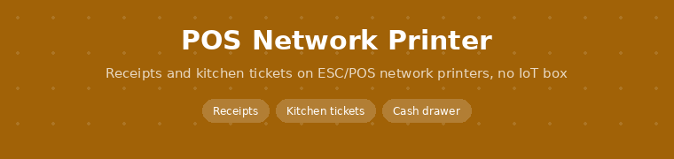
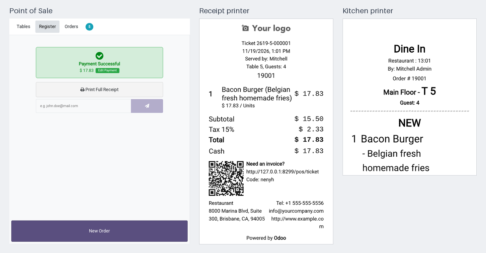
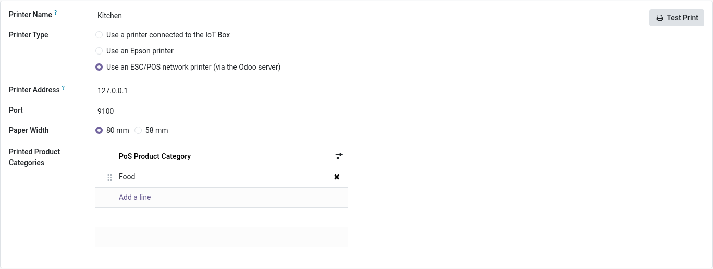
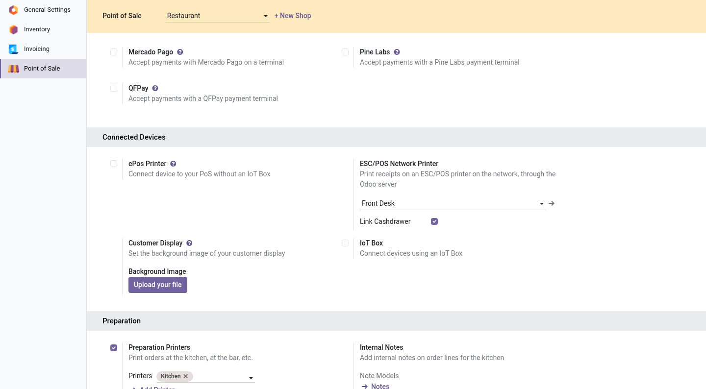
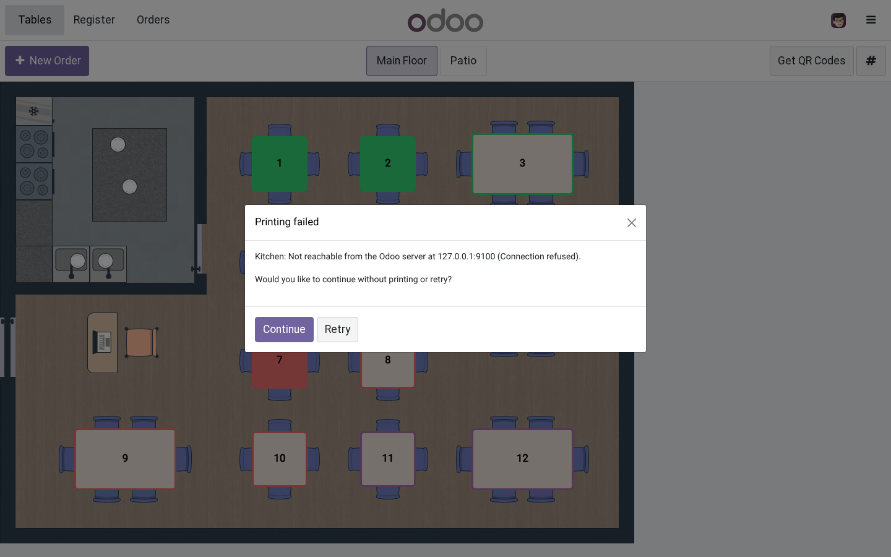

Odoo prints to ordinary thermal receipt printers only through an IoT box. POS Network Printer sends receipts and kitchen tickets to any ESC/POS printer on your network, through the Odoo server, and opens the cash drawer.
Odoo 19.0 Community & Enterprise Free · LGPL-3

One order: the kitchen ticket when the waiter sends it, the receipt after payment. Shown as the printers received them.
Pick the receipt printer in the POS settings. Receipts and reprints print there, logo and QR code included.
A third type for Odoo's preparation printers: each printer gets the products of its POS categories.
The drawer wired to the receipt printer opens on cash payments and with the Open Cashbox button.
A printer that is off shows which printer and why, with Retry. The order is saved either way.
One button on the printer prints a test ticket, or says why it could not.
Port 9100 by default. No IoT box, no extra Python library, no program on the tills.

A kitchen printer: type, address, port, paper width and the categories it prints.

Point of Sale settings: the receipt printer and its cash drawer.

The kitchen printer is off: the waiter sees why, and can retry or continue.
Free and open source (LGPL-3) by Paulius Gaizauskas · Questions or bugs: GitHub issues